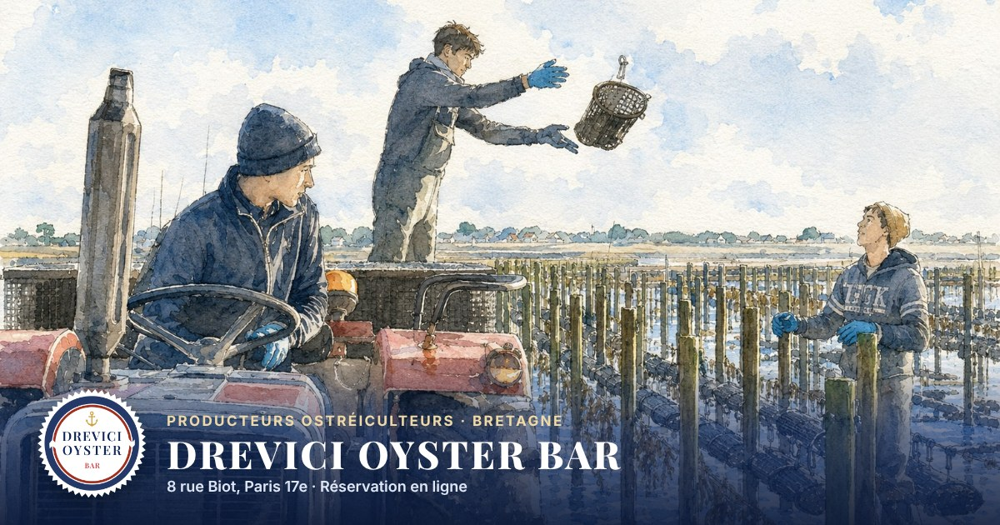
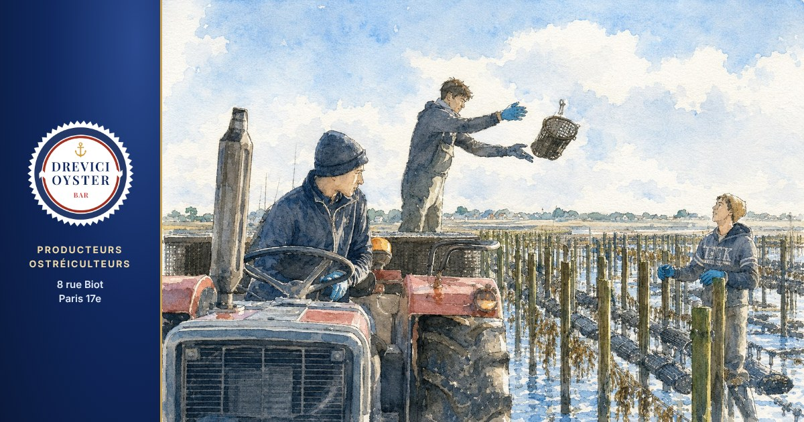
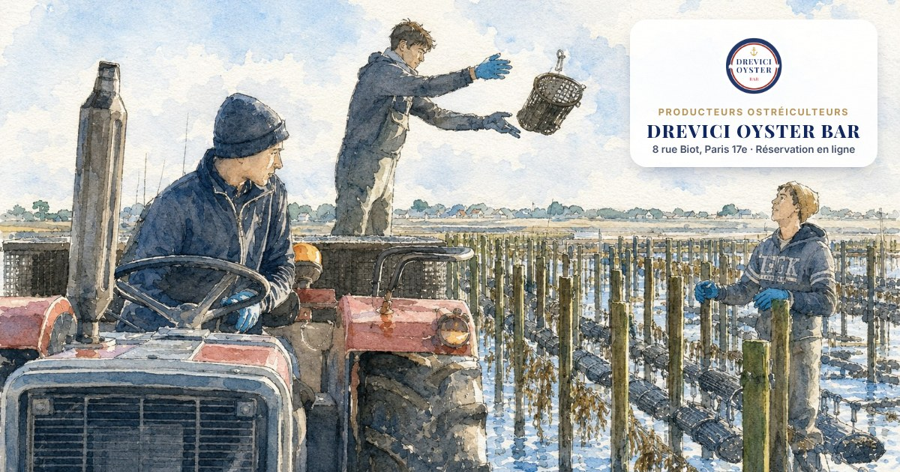
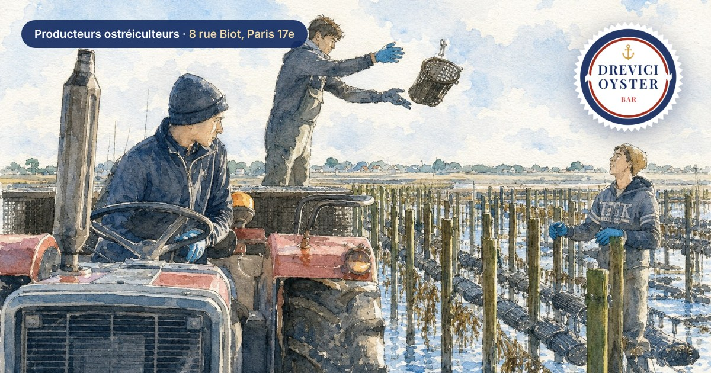
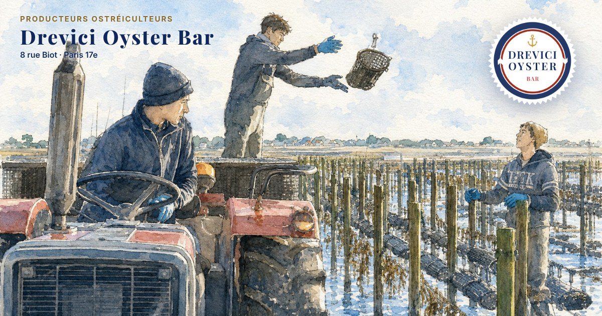
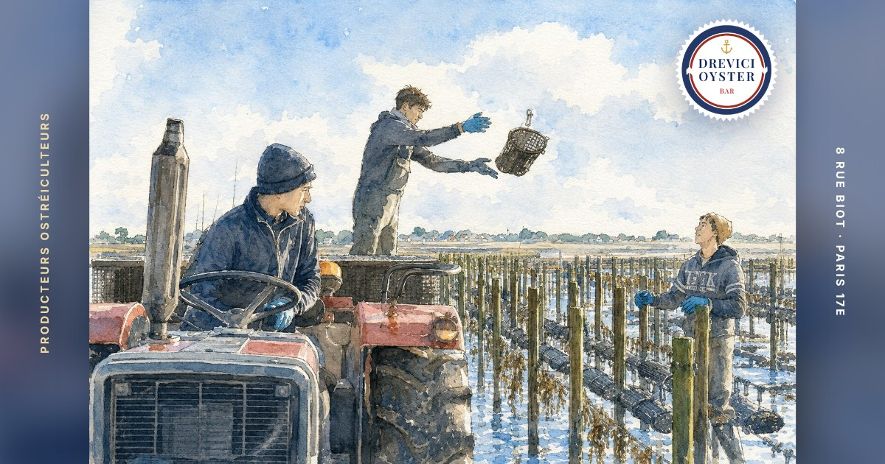

Accroche « Producteurs ostréiculteurs » en premier, puis l'adresse. L'image est recadrée plus bas pour qu'on voie le tracteur et le parc à huîtres (A2 et B3 montrent même l'aquarelle en entier).





